The va11ydette: the user guide
1. Introduction: Why La va11ydette?
The va11ydette is a web application that offers evaluation grids and lists of questions / answers, facilitating digital accessibility audits.
It supports the WCAG 2.2 repository. The evaluation grids are divided into three categories; Web, Android and IOS.
Once you have finished answering the chosen evaluation grid, a compliance rate will be calculated for your audit.
The purpose of this user guide is to show you all the features available and to help you complete your audit.
2. Use the va11ydette
2.1 Create a new audit
- To create a new audit, choose a rubric that matches what you
want to test:
- either on the home page by clicking on the desired grid
- either in the "Select a checklist" menu located in the header of the site
- The audit is created. Its default name is that of the selected evaluation grid. 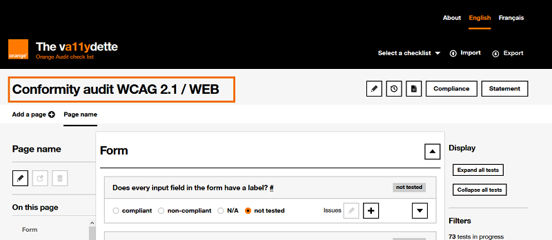
- We recommend that you change the default name of the
audit.
To do this:- Click on the button
 located just after the
audit title.
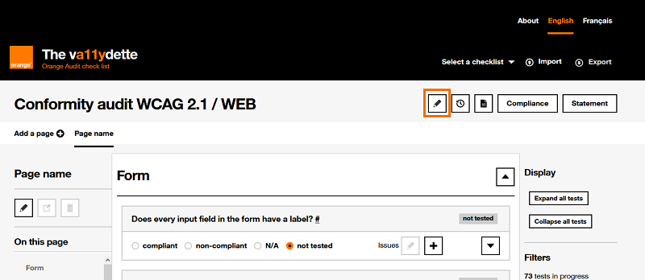
located just after the
audit title.
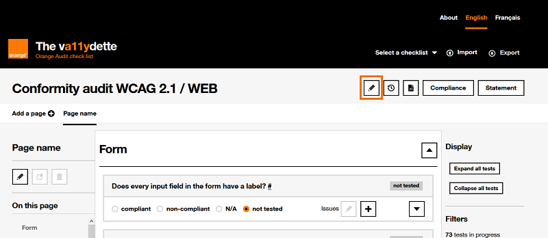
- In the modal that opens, replace the default name of the audit with the name you want to give it, then click on the "Save”. 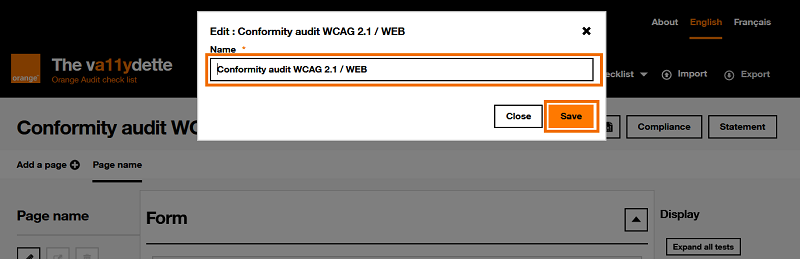
- Following the click on the "Save" button, a confirmation
message of the modification of the name of the audit is displayed in
the modal.
Please note: the modal does not close automatically. To do this, you must click on the "Close" button. 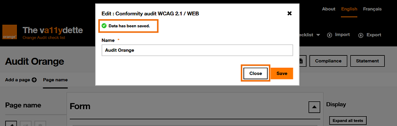
- Click on the button
2.2 Pages
2.2.1 Add pages
For your audit, it is important to select a sample of pages. You will therefore need one evaluation grid per page of the application to be audited.
To generate an evaluation grid dedicated to a page of the application, you must:
- Click on the "Add a page" button. 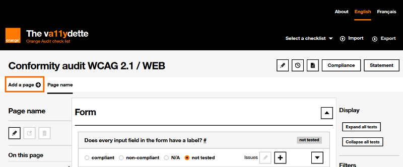
- Indicate in the modal that is displayed:
- the name you want to give to this page
- its url in the application to be audited (this will allow you to access it more easily)
- the presence on the page of the different categories of elements indicated, by checking or unchecking the different boxes proposed.
- Click on the "Save" button to generate the new page. 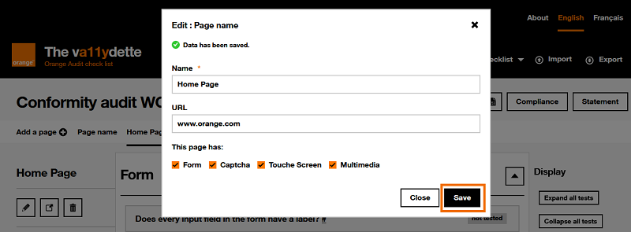
- Following the click on the "Save" button, a confirmation
message for the creation of the page is displayed in the modal.
To know , the modal does not close automatically. To do this, you must click on the "Close" button. 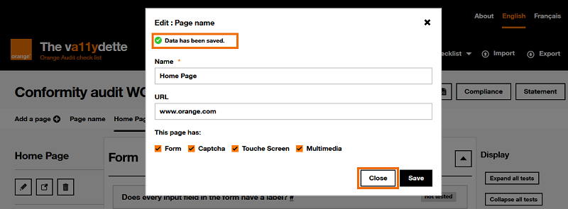 - The audit page thus created appears in the menu located under the title of the
audit.
When several pages have been created in the audit, you can switch from to another by clicking on their name. 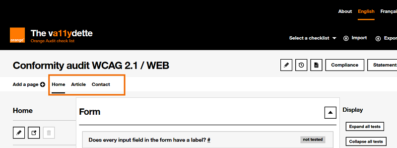
2.2.2 Managing an audit page
All features of the page are described in the list below:
-
button
that allows you to modify the page name and its
URL.
-
 button that allows to open the URL of the page
in a new tab. This button will be disabled if no URL is entered.
button that allows to open the URL of the page
in a new tab. This button will be disabled if no URL is entered.
 button to delete the page. Note: it is not
possible to delete the first page of the audit.
button to delete the page. Note: it is not
possible to delete the first page of the audit.-
section "On this page": navigation menu that allows you to go directly to each of the different categories of criteria of the evaluation grid present on the page.
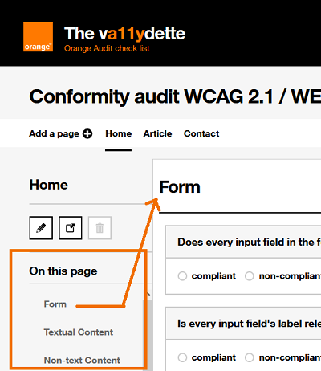 -
"Display" section: two buttons allowing you to expand or collapse all the criteria of the evaluation grid. Unfolding them will display all the information to validate or invalidate a criterion.
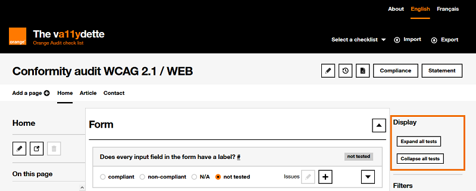 -
filters: set of filters allowing you to modify the criteria displayed on the page. It is possible to choose to display:
- The criteria according to their results (compliant, non-compliant ...).
- The criteria of good practices (note: these criteria are not taken into account when calculating the compliance rate).
- The criteria according to the WCAG standard.
2.3 The criteria of the evaluation grid
Each page created in the audit contains a number of accessibility criteria to be evaluated. The list of criteria present depends on the chosen evaluation grid.
Each accessibility criterion is made up of:
- of a question to assess a given accessibility criterion
- radio buttons to indicate the status of the criterion (compliant, non-compliant, not applicable, not tested).
- buttons to add , and edit
 an issue
(criteria not met).
an issue
(criteria not met).
-
a button to display additional information for the criterion . This additional information explains in more detail how to validate or invalidate the criterion.
In the additional information, there is a Automatically apply this result to the next page checkbox. This functionality can be useful when you find an error concerning an element which is found in several pages of the site of your audit. By checking this box, the result given to the criterion on this page will be automatically applied to this same criterion on the next page of your audit (respecting the order of the pages as they are presented in the page navigation bar). Issues will also be copied.
If pages are created after checking this box, this same criterion in the new pages will also automatically retrieve the result given to it in the previous pages, as well as its issue.
The WCAG number to which the criterion is attached will be displayed in the additional information, if this criterion is an accessibility criterion
2.3.1 Add an issue
When an evaluated criterion is considered non-compliant, it is important to add an issue for this criterion. This will allow you to easily find the non-conformities noted on the different pages audited.
To add an issue:
- Click on the button .
- In the form of the modal that appears:
-
Select from the drop-down list "select a pre-defined issue" one of the issye provided for this criterion. Namely: for certain criteria, there are no issues foreseen.
Click on the "Load" button to pre-fill the other form fields accordingly. You can then modify and adapt the pre-filled information if necessary.
- In the mandatory "summary" field, write a brief description of the issue.
- In the mandatory "description" field, write a complete description of the issue. The goal is to leave information that will allow you to quickly find the issue that led to the non-compliance, so you must be as precise as possible.
- In the optional field "solution", you can indicate what would help or allow to correct the nonconformity.
- In the optional "technical solution" field, indicate, if possible, the code that allows the non-conformity to be corrected.
-
2.3.2 Modify or delete an issue
It is possible to modify or delete each issue created. To do this, click on the "Edit an issue" button.
2.4 Saving an audit
There are two ways to save your current audit:
-
Auto-save: your last 8 audits are automatically saved in your browser's local storage.
This solution is not the safest because you can lose your data if you clear your browser cache or do a lot of auditing.
Warning, automatic backup does not work in private browsing.
-
Exporting the audit in JSON format: to do this, click on the button "Export" located in the header of La va11ydette and save the file on your computer .
2.5 Recover an audit
You can retrieve data from a previously saved audit in La va11ydette. There are two ways to do this, each corresponding to how the audit was saved (see section 2.4 Saving your current audit).
- Audits saved automatically in browser:
- To access it, click on the button
 located to the right
of the audit name.
located to the right
of the audit name. - A modal will open with the list of saved audits, choose the audit to Recover among those proposed and click on the button "Recover".
- Note: this is also where you have access to deleting an audit saved in the browser.
- To access it, click on the button
- Audits saved in a file exported in JSON format
- To access it, click on the "Import" button located in the header of La va11ydette.
- A hidden field will appear. Click on "Browse" and select the audit export file on your computer to retrieve in La va11ydette. Then click the "Load Audit" button.
2.6 View summary
To view an encrypted summary of your audit, click the "Compliance" button to the right of the audit title.
The summary contains:
- the Global Compliance rate is the average of the measurements for each page.
- the rate of Criteria met, it is obtained by dividing the number of compliant criteria by the number of applicable criteria (criteria rated "compliant" + criteria rated " non-compliant”).
- 4 tabs:
- 4 tabs:
- Tab "Results per page": displays the list of pages created in the audit with for each its name, its percentage of compliance and its URL.
- Tab "Compliance rate by page" (only available for WCAG evaluation grids): tab that summarizes the A and AA criteria of each page
- Tab "Summary by levels" (only available for WCAG evaluation grids): tab that summarizes the compliant/non-compliant/non-applicable criteria
- Tab "List of noncompliances": indicates all the non-conforming criteria and the summary of issues.
- 4 tabs:
2.7 Generate the statement
Once all the accessibility criteria have been evaluated for each of the pages, you can generate an accessibility statement.
This statement will be generated as a file in XML or HTML format. The accessibility statement should be posted on the audited site in an accessible format.
Here are the steps to generate the accessibility statement file:
-
Click on the "Statement" button. A "Statement configuration" page is displayed. This page contains a form for collecting the information you want to appear on the accessibility statement.
Also, it is only once the form fields have been filled in that it will be possible to generate the statement file.
- Fill out the form. Two ways of doing this are possible:
-
Fill in all the requested fields manually by going directly to the "2. Complete the data" section to enter the requested information yourself, namely:
- Project name: indicate the name of the project you have just audited
- Language: choose the language in which the statement must be generated
- Date: indicate the date on which the audit was carried out
- Type of result: choose the type of compliance measure to display on the statement
- Approval: choose the entity that carried out
the audit and its head office. Warning: it is important
to modify the Approval information by clicking on the button , located next to the title. A modal will
open with two fields: the name and the
content of the declarer. The content will be the text
displayed on the statement
- Contact: choose the contact to appear on the
statement in order to allow users to provide feedback on the accessibility
of the site. Warning: it is important to modify the
declarant's information by clicking on the button , located next to the title. A modal will
open with two fields: the name and the
content of the contact. The content will be the text
displayed on the statement
- Accessibility plan: provide a link to the Accessibility plan. The content of this field will be the text displayed on the statement. It is therefore necessary to make sentences that introduce the multi-year plan.
- Technologies: indicate the list of
technologies used on the audited site. A list of technologies is proposed by
default. If it is not suitable as it is, click on the button , located next to the title, to edit it.
- Tests: list the test tools used during your
audit. A list of tools is proposed by default. If it is not suitable as it
is, click on the button , located next
to the title, to edit it.
- Environments: indicate the environments on
which the site has been audited, for example Firefox v78.15 and NVDA
v2022.1. A list of environments is proposed by default. If it is not
suitable as it is, click on the button , located next to the title, to edit it.
- User testing: indicate whether user tests have been carried out. Specify the number of users, the number of blocking points that have been identified, and add a description of what has been tested (characteristics of the users tested, tools used, tasks requested, etc.)
- Derogation and Exemption: non-accessible content that is subject to an exemption for disproportionate burden. Each derogation or exemption mentioned must be explained and justified
Once these fields have been filled in, you can save the data contained in the form in two ways:
- By clicking on the "Save" button: the information entered in the form is saved in order to generate the statement.
- By clicking on the "Save and download in JSON format" button: it has the same utility as the "Save" button, except that it will additionally download a file in JSON format. You can use this file in your next statements to prefill the form by importing it into the "1.Prefill the form" section. This will save you time.
- Prefill the form fields on this page, you can use
this option and thus save time only if you have downloaded a JSON file of the form
previously filled in. If that is the case :
- Go to section “1. Prefill the form
- Click the "Choose a file" button and select the JSON file that contains the pre-filled information for the form.
- Click on the "Import" button. The fields in part "2. Complete the data" are automatically pre-filled with the information present in the imported JSON file.
- Verify and modify pre-filled information
- Save the form
-
- Generate the accessibility statement file, with the
information filled in:
- Go to the "Statement" section
-
Choose the format in which to generate the statement file, by clicking on the "XML" or "HTML" button.
Please note: you will only be able to generate a statement once the audit has been completed and the statement form has been completed. Buttons will not be available otherwise.
2.8 Export to Excel format
It is also possible to export in Excel format .
All issues reported during your audit will be present in the Excel file. This can be useful for tracking corrections if you want to support a project.
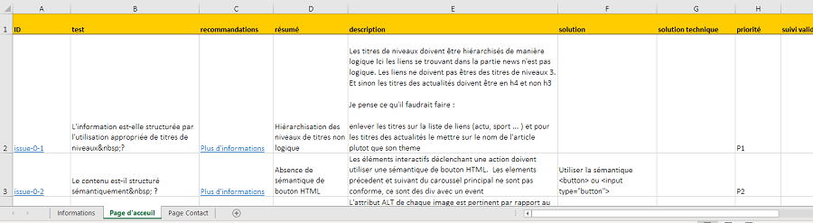